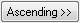
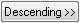

Dieses Hilfsmittel sortiert Spalten nach Werten in den Beschriftungszeilen des Arbeitsblatts. Sie können die Werte in den verschiedenen Beschriftungszeilen der Spalten zum verschachtelten Sortieren verwenden.
Origin bietet zwei Methoden zum Öffnen dieses Dialogs:
In diesem Dialog können Sie eine Spaltenbeschriftungszeile in dem Bedienfeld Ausgewählte Spalten wählen und auf die Schaltfläche Aufsteigend oder Absteigend klicken, um diese jeweils als Kriterium zum Bedienfeld Sortierkriterien hinzuzufügen. Das Format etc. können Sie später benutzerdefiniert anpassen. Sie können mehr als ein Kriterium hinzufügen.
Sollte es fehlende Werte in den ausgewählten Arbeitsblattbeschriftungszeilen geben, können Sie sie entweder als den kleinsten oder größten Wert definieren, indem Sie die entsprechende Option aktivieren.
Inhalt |
Die verfügbaren Beschriftungszeilen werden in diesem Bedienfeld angezeigt, einschließlich die Parameter: Langname, Einheiten, Kommentare, Parameter, Abtastintervall und Benutzerdefiniert.
Wählen Sie die Beschriftungen im Bedienfeld Ausgewählte Spalten aus und klicken Sie auf Aufsteigend  bzw. Absteigend , um sie zum Bedienfeld Sortierkriterien hinzuzufügen.
Außerdem können Sie, wenn Sie die Beschriftungen zu dem Bedienfeld Sortierkriterien hinzufügen, das Zeilenformat festlegen.
|
Hinweis:
|
Zeilenbeschriftungen können Text, Zahlen, Zeit- und Datumsangaben sein. Um nach den jeweiligen Werten zu sortieren, muss das Zeilenformat korrekt festgelegt sein.
| Format | Legt das Format der Beschriftungszeilen fest: Text, Numerisch, Zeit oder Datum. |
|---|---|
| Anzeige | Wenn Sie Zeit oder Datum auswählen, wird diese Auswahlliste angezeigt. Legt fest, wie die Daten in der Spalte angezeigt werden. |
| Benutzerdefinierte Anzeige | Wenn die Benutzerdefinierte Anzeige in der Auswahlliste Anzeige ausgewählt ist, wird das Kombinationsfeld gezeigt. Sie können das Datums- und Zeitformat benutzerdefiniert anpassen. |
Sie können den fehlenden Wert in den Beschriftungen als den kleinsten oder größsten Wert festlegen, wenn Sie die Spalten sortieren.
Sie können entweder die Ausgewählten Spalten oder das Gesamte Arbeitsblatt sortieren.
|
Hinweis: Wenn Sie keine Spalte auswählen und diesen Dialog öffnen, indem Sie Worksheet: Spalten nach Beschriftungen sortieren im Hauptmenü auswählen, wird das Gesamte Arbeitsblatt standardmäßig ausgewählt und diese Option wird ausgegraut. |